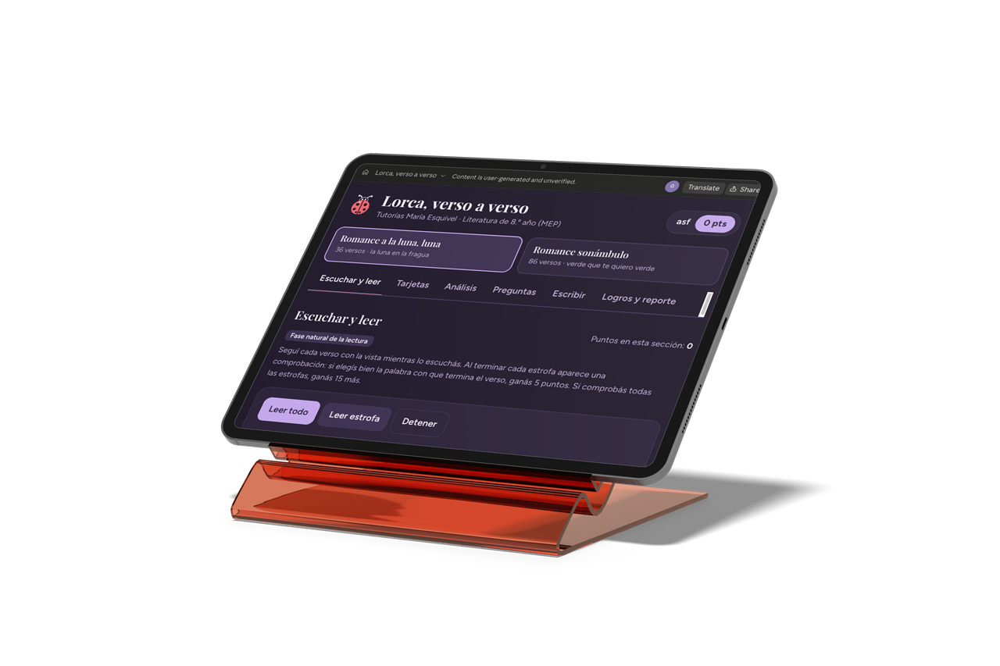

Conversemos
20 minutos gratis para revisar la materia y su situación.
Transformación Académica
RESCATE ACADÉMICO · ONLINE
Clases individuales, prácticas a su medida y apoyo entre sesiones para preparar su convocatoria.
₡55.000 / mes
₡70.000 a partir del 2027
Quisiera dar fe del excelente trabajo que teacher Maria realiza al usar efectivamente las redes sociales en sus clases. Su compromiso, creatividad y dedicación se reflejan claramente en la calidad de los contenidos y as experiencias de aprendizaje que crea. Siento que una de sus mayores fortalezas es que no se limita simplemente a trasladar contenidos a un ambiente digital, sino que busca las mejores maneras de aprovechar las herramientas disponibles para hacer que el aprendizaje sea más dinámico, accesible y significativo. El compromiso y el esmero que pone en su trabajo son muy evidentes, al igual que su disposición para innovar y mejorar de manera constante. ¡Muchas felicidades por su excelente labor!
Buenas tardes. Profe Yo quería comentarte sobre lo contenta que estamos mi esposo y mi persona. Por el buen trato que recibe mi hijo en tus clases además mi hijo es el primero en preguntar hay clases? Me gusta su forma de enseñar y que todo los trabajos los hace personalizado para cada estudiante yo puedo ver un gran avance en mi hijo en su aprendizaje. Estamos súper satisfechos muchas gracias!
Quería agradecerle por la paciencia, esmero, empatía y dedicación con que hace las cosas. De verdad muchas gracias, estoy repitiendo sétimo de colegio y este año voy bien en inglés los 3 Trimestres.
Una excelente Teacher hace la diferencia Quiero expresar mi más sincero agradecimiento y reconocimiento a Teacher María por el excelente trabajo que ha realizado con mi hija durante sus lecciones individuales. Su paciencia, dedicación, cariño y compromiso han sido fundamentales en el proceso de aprendizaje. Cada lección ha sido preparada con esmero, tomando en cuenta las necesidades y el ritmo de aprendizaje de la niña, logrando no solo avances académicos, sino también mayor confianza y motivación. Gracias por enseñar con vocación, por creer en sus capacidades y por acompañarla con tanta entrega en cada paso de este proceso. Sin duda, Teacher María es comprometida y dedicada, que recomiendo totalmente, cómo madre de familia.
Mi experiencia con mi Teacher María, es la mejor. Me gustan muchísimo sus clases y, sobre todo, su forma de ser. Es divertida, atenta y muy paciente, que siempre busca que las lecciones sean diferentes, dinámicas y entretenidas. Me encanta que se adapte a la forma de aprender de cada estudiante y que haga que uno se sienta cómodo y con ganas de seguir aprendiendo. Cada clase es una experiencia bonita, porque además de aprender, disfruto mucho el tiempo que compartimos. Estoy muy agradecida por su dedicación, paciencia y por hacer que aprender sea algo tan divertido y especial. Yo la amo!!
Identifico qué le cuesta y adapto un plan a su nivel, sus intereses y sus avances.
20 minutos gratis para revisar la materia y su situación.
Un cronograma con prioridades y prácticas
a su medida.
Clase semanal con seguimiento para ajustar y resolver.
UN MES · UNA MATERIA
₡55.000
₡70.000 a partir del 2027
Renovable · SINPE o transferencia
Una clase por semana, con opción de reacomodar según disponibilidad.
Juegos y ejercicios creados para trabajar lo que tu hijo necesita.
Probar una actividad
Organizo la preparación y acompaño a tu hijo en cada avance.
Tecnológico de Monterrey
UNED